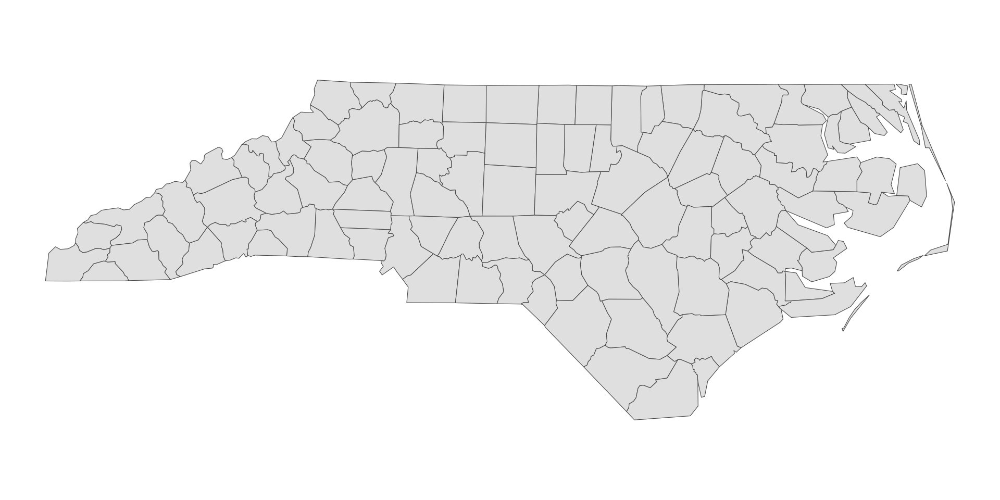
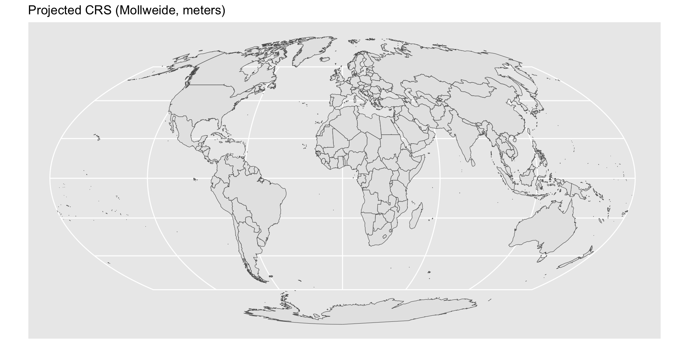

Reading layer `nc' from data source
`/Library/Frameworks/R.framework/Versions/4.4-arm64/Resources/library/sf/shape/nc.shp'
using driver `ESRI Shapefile'
Simple feature collection with 100 features and 14 fields
Geometry type: MULTIPOLYGON
Dimension: XY
Bounding box: xmin: -84.32385 ymin: 33.88199 xmax: -75.45698 ymax: 36.58965
Geodetic CRS: NAD27Week 12 - STEM 691
Maps with {sf} and {ggplot}
Dr. Kelly Boles
Weekly Check In/
Download .zip
Start Recording
Today’s Agenda
- Weekly Check In
- Vector spatial data and simple features (
geom_sf()) - Finding geometries: tigris and
st_read() - Creating choropleth maps
- Layering geoms
- Collaborative Practice
- Looking Ahead
Norms
| In person norms | And also, for online learning… |
|---|---|
| Be fully present to each other & the work. | Keep your video on when possible. In large groups, mute your microphone when not talking. Close/mute/minimize other apps and devices to avoid distraction. |
| Assume positive intent & also take responsibility for the impact you have. | Remember online interaction masks even more of the full story. Notice when you are making assumptions, and seek information to check them. |
| Embrace collaboration. | Use the gallery view so you can see everyone. Use breakout groups as an opportunity to collaborate. |
| Be open to learning and accept non-closure. | Expect the inevitable technical glitches and learning curves. Exercise patience with one another. |
| Be aware of when to step up and step back. When stepping back, do so as an active listener. | Try out different modes of participation. Step back by making space for others to engage in these. |
| Land your plane–get to the point you intended. | We all know how hard it is to be talked at, especially in a Zoom session, so let’s keep it to a minimum. |
Making maps
Map making — the art of cartography — is an ancient skill involving communication, attention to detail, and an element of creativity.

Visualizing data with maps
In addition to being fun and creative, cartography also has important practical applications. A carefully crafted map can be the best way of visualizing data.

Visualizing data with maps

Vector spatial data and simple features {sf}
Vector spatial data
- Vector spatial data is a spatial data model that represents geographic features as points, lines, and polygons
- Typically, these are encoded with the simple features (sf) encoding
The {sf} package
- We can use the {sf} package to work with vector spatial data
- Install the package by running:
The {sf} package
- The {sf} package uses the class of simple feature (
sf) for vector spatial data in R - {sf} represents vector spatial data much like a regular R data frame, but with a special column,
geometry, that represents the shape of each feature - An important benefit is its compatibility with the tidyverse packages
Inspecting objects of class sf
The {sf} package provides a simple way of storing geographic information and the attributes of the geographic units in a single dataset.
In the example below, nc is of the class sf:
Inspecting objects of class sf
Inspecting the object reveals its sf class:
The {sf} package
- sf objects has variable
geometryat the end, where each row represents a single simple feature geographic unit (sfg; in this case, county) - There are different types of sfgs (
POINT,LINESTRING,POLYGON,MULTIPOLYGON, etc)


The {sf} package
- An sf object is essentially a dataframe with geometric information stored as a variable (column)
Simple feature collection with 100 features and 5 fields
Geometry type: MULTIPOLYGON
Dimension: XY
Bounding box: xmin: -84.32385 ymin: 33.88199 xmax: -75.45698 ymax: 36.58965
Geodetic CRS: NAD27
First 10 features:
AREA PERIMETER CNTY_ NAME FIPS geometry
1 0.114 1.442 1825 Ashe 37009 MULTIPOLYGON (((-81.47276 3...
2 0.061 1.231 1827 Alleghany 37005 MULTIPOLYGON (((-81.23989 3...
3 0.143 1.630 1828 Surry 37171 MULTIPOLYGON (((-80.45634 3...
4 0.070 2.968 1831 Currituck 37053 MULTIPOLYGON (((-76.00897 3...
5 0.153 2.206 1832 Northampton 37131 MULTIPOLYGON (((-77.21767 3...
6 0.097 1.670 1833 Hertford 37091 MULTIPOLYGON (((-76.74506 3...
7 0.062 1.547 1834 Camden 37029 MULTIPOLYGON (((-76.00897 3...
8 0.091 1.284 1835 Gates 37073 MULTIPOLYGON (((-76.56251 3...
9 0.118 1.421 1836 Warren 37185 MULTIPOLYGON (((-78.30876 3...
10 0.124 1.428 1837 Stokes 37169 MULTIPOLYGON (((-80.02567 3...- NC has 100 counties
geom_sf()
geom_sf()allows for visualizing sf objects- It is a {ggplot} geom, so it can be used in the same way as other geoms
- Conveniently,
geom_sf()automatically detects the geometry type of spatial objects stored in sf and draw maps accordingly
geom_sf()

geom_sf()
Specifying the aesthetics
Since it is a ggplot2 object, we can define aesthetics as usual, in this case, fill and color:

Finding geometries
Finding geometries
The
ncdata is included with the {sf} package, but in practice, you will need to find your shapefiles elsewhereTwo major types of files for this:
- Shapefiles (.shp + dependencies)
- Usually download as a .zip
- Contains multiple files with the same name but different extensions
- e.g.,
my_shapefile.shp,my_shapefile.shx,my_shapefile.dbf, etc.
- geoJSON (.geojson)
- Shapefiles (.shp + dependencies)
We’ll focus on shapefiles, which are the most common format
Shapefiles
- Shapefiles are a collection of files that store the geometry and attributes of geographic features
- e.g., if you wanted to have a map of the counties in Tennessee, you would need a shapefile that contains the geometry of each county in Tennessee
- Otherwise, you would need to construct the boundaries/geometries yourself.
- Some typical use cases:
- You want to fill in counties with colors based on some data
- You want to overlay points on a map, like the locations of schools in Tennessee
The {tigris} package
The {tigris} package
One option for shapefiles: {tigris} is an R package that allows users to directly download and use TIGER/Line shapefiles from the US Census Bureau using R.
TIGER stands for Topologically Integrated Geographic Encoding and Referencing and include three general types of data:
- Legal entities
- States, counties, school districts, etc.
- Statistical entities
- Census groups, blocks used for statistical reporting
- Geographic features
- Roads, rivers, landmarks, etc.
The {tigris} package
- tigris functions return simple features objects with a default year of 2024.
- Many functions in the package like
states()andcounties()androads() - See all function options: https://github.com/walkerke/tigris
- The functions have different arguments, so check documentation for each (e.g.,
?states())
- Many functions in the package like
- Note: TIGER data is well known to struggle with water features, so be cautious. There are other places to find good shapefiles, too!
The {tigris} package
Simple feature collection with 126 features and 14 fields
Geometry type: MULTIPOLYGON
Dimension: XY
Bounding box: xmin: -90.31049 ymin: 34.98292 xmax: -81.6469 ymax: 36.67826
Geodetic CRS: NAD83
First 10 features:
STATEFP UNSDLEA GEOID NAME LSAD
1 47 00001 4700001 Hamblen County School District 00
2 47 00060 4700060 Alcoa City School District 00
3 47 00078 4700078 Fort Campbell Schools 00
4 47 02340 4702340 Lawrence County School District 00
5 47 03090 4703090 Morgan County School District 00
6 47 03180 4703180 Metropolitan Nashville Public School District 00
7 47 03390 4703390 Perry County School District 00
8 47 03420 4703420 Pickett County School District 00
9 47 04550 4704550 Wilson County School District 00
10 47 00090 4700090 Anderson County School District 00
LOGRADE HIGRADE MTFCC SDTYP FUNCSTAT ALAND AWATER INTPTLAT
1 PK 12 G5420 <NA> E 417476152 37852326 +36.2183967
2 PK 12 G5420 <NA> E 38810006 2388278 +35.8095702
3 PK 12 G5420 B E 273929183 490282 +36.5982483
4 PK 12 G5420 <NA> E 1598359119 2218403 +35.2204764
5 PK 12 G5420 <NA> E 1352439680 823018 +36.1386970
6 PK 12 G5420 <NA> E 1303999197 56424538 +36.1691287
7 PK 12 G5420 <NA> E 1074235994 20984700 +35.6637521
8 PK 12 G5420 <NA> E 422090560 29845401 +36.5593638
9 PK 12 G5420 <NA> E 1352057025 29867644 +36.1494307
10 PK 12 G5420 <NA> E 729446691 10681215 +36.1454415
INTPTLON geometry
1 -083.2660711 MULTIPOLYGON (((-83.4687 36...
2 -083.9758571 MULTIPOLYGON (((-84.02875 3...
3 -087.6003456 MULTIPOLYGON (((-87.8021 36...
4 -087.3965460 MULTIPOLYGON (((-87.61192 3...
5 -084.6392616 MULTIPOLYGON (((-84.91415 3...
6 -086.7847898 MULTIPOLYGON (((-86.52329 3...
7 -087.8693256 MULTIPOLYGON (((-88.0435 35...
8 -085.0757410 MULTIPOLYGON (((-85.28541 3...
9 -086.2911813 MULTIPOLYGON (((-86.59536 3...
10 -084.1876563 MULTIPOLYGON (((-84.08317 3...The {tigris} package
We can plot our output from tigris using ggplot2 and geom_sf():
Reading shapefiles
Reading shapefiles
- A second option for shapefiles is to find one on the internet, download it, and read it into R
- There are lots of places to get shapefiles:
Reading shapefiles
Lots of government agencies and organizations provide shapefiles for free, including Knox County
Let’s say we want to map the Zoning districts from Knox County (available here: https://www.arcgis.com/home/item.html?id=481b8a768b20403998fb9b454f35d23b).
I downloaded the shapefile .zip and saved it in my Week 12 folder.
When I unpacked the folder, I renamed it to
shapefilesfor ease.

Reading shapefiles
Note: The st_ prefix
In {sf} spatial functions have the pre-fix st_
I’ll use the function st_read() to read in the shapefile
dsn: the path to the shapefile folderlayer: name of the shapefile
Reading layer `Knoxville-Knox_County_Zoning' from data source
`/Users/kelly/Documents/viz-data-using-r/week-13/shapefiles'
using driver `ESRI Shapefile'
replacing null geometries with empty geometries
Simple feature collection with 13230 features and 10 fields (with 14 geometries empty)
Geometry type: GEOMETRY
Dimension: XY
Bounding box: xmin: 2479441 ymin: 536582.7 xmax: 2663425 ymax: 680917.9
Projected CRS: NAD83(HARN) / Tennessee (ftUS)Reading shapefiles
Tip
When naming objects, I like to use the _sf suffix to indicate that it is a simple feature object. This helps me remember that it is a spatial object and not a regular data frame.
Reading layer `Knoxville-Knox_County_Zoning' from data source
`/Users/kelly/Documents/viz-data-using-r/week-13/shapefiles'
using driver `ESRI Shapefile'
replacing null geometries with empty geometries
Simple feature collection with 13230 features and 10 fields (with 14 geometries empty)
Geometry type: GEOMETRY
Dimension: XY
Bounding box: xmin: 2479441 ymin: 536582.7 xmax: 2663425 ymax: 680917.9
Projected CRS: NAD83(HARN) / Tennessee (ftUS)- This output says it has a projected CRS. What does that mean ?
Understanding Projections
Understanding projections
- Geometries can be projected (projected Coordinate Reference System) or unprojected (geodetic Coordinate Reference System)
- What’s the difference?
Geodetic CRS = Earth as geodetic sphere
Simple feature collection with 1 feature and 2 fields
Geometry type: MULTIPOLYGON
Dimension: XY
Bounding box: xmin: -83.4687 ymin: 36.08129 xmax: -83.08173 ymax: 36.34529
Geodetic CRS: NAD83
GEOID NAME geometry
1 4700001 Hamblen County School District MULTIPOLYGON (((-83.4687 36...- The most common/often default geodetic CRS is WGS84 (EPSG: 4326)
Understanding projections
- Geometries can be projected (projected Coordinate Reference System) or unprojected (geodetic Coordinate Reference System)
- What’s the difference?
Projected CRS = Earth as a flat surface
Simple feature collection with 1 feature and 3 fields
Geometry type: POLYGON
Dimension: XY
Bounding box: xmin: 2560779 ymin: 611578.9 xmax: 2561690 ymax: 612660.6
Projected CRS: NAD83(HARN) / Tennessee (ftUS)
ZONE1 AREA_ACRES ZONE_TYPE geometry
1 RN-1 9.629819 City of Knoxville POLYGON ((2561448 612660.5,...Understanding projections
- Projected CRS vs. Geodetic CRS: What are implications?
Geodetic CRS = sphere
- Note: R still flattens, but you aren’t telling it how

Understanding projections
Why use a geodetic CRS?
- Preserves true latitude and longitude
Why use a projected CRS?
- Preserves area, distance, or direction
- Distance and area calculations are more accurate
- Can created local maps with minimal distortion
- All projections have a CRS, not all CRSes have projections
- Standardized CRSes have a unique EPSG code
Understanding projections
Why use a geodetic CRS?
- Preserves true latitude and longitude

Why use a projected CRS?
- Preserves area, distance, or direction
- Distance and area calculations are more accurate
- Can created local maps with minimal distortion

Understanding projections
- Is the CRS of
knox_zones_sfgeodetic or projected? - What is the EPSG code for the CRS of
knox_zones_sf? - The
st_crs()function returns the CRS of an sf object
Coordinate Reference System:
User input: NAD83(HARN) / Tennessee (ftUS)
wkt:
PROJCRS["NAD83(HARN) / Tennessee (ftUS)",
BASEGEOGCRS["NAD83(HARN)",
DATUM["NAD83 (High Accuracy Reference Network)",
ELLIPSOID["GRS 1980",6378137,298.257222101,
LENGTHUNIT["metre",1]]],
PRIMEM["Greenwich",0,
ANGLEUNIT["degree",0.0174532925199433]],
ID["EPSG",4152]],
CONVERSION["SPCS83 Tennessee zone (US Survey feet)",
METHOD["Lambert Conic Conformal (2SP)",
ID["EPSG",9802]],
PARAMETER["Latitude of false origin",34.3333333333333,
ANGLEUNIT["degree",0.0174532925199433],
ID["EPSG",8821]],
PARAMETER["Longitude of false origin",-86,
ANGLEUNIT["degree",0.0174532925199433],
ID["EPSG",8822]],
PARAMETER["Latitude of 1st standard parallel",36.4166666666667,
ANGLEUNIT["degree",0.0174532925199433],
ID["EPSG",8823]],
PARAMETER["Latitude of 2nd standard parallel",35.25,
ANGLEUNIT["degree",0.0174532925199433],
ID["EPSG",8824]],
PARAMETER["Easting at false origin",1968500,
LENGTHUNIT["US survey foot",0.304800609601219],
ID["EPSG",8826]],
PARAMETER["Northing at false origin",0,
LENGTHUNIT["US survey foot",0.304800609601219],
ID["EPSG",8827]]],
CS[Cartesian,2],
AXIS["easting (X)",east,
ORDER[1],
LENGTHUNIT["US survey foot",0.304800609601219]],
AXIS["northing (Y)",north,
ORDER[2],
LENGTHUNIT["US survey foot",0.304800609601219]],
USAGE[
SCOPE["Engineering survey, topographic mapping."],
AREA["United States (USA) - Tennessee - counties of Anderson; Bedford; Benton; Bledsoe; Blount; Bradley; Campbell; Cannon; Carroll; Carter; Cheatham; Chester; Claiborne; Clay; Cocke; Coffee; Crockett; Cumberland; Davidson; De Kalb; Decatur; Dickson; Dyer; Fayette; Fentress; Franklin; Gibson; Giles; Grainger; Greene; Grundy; Hamblen; Hamilton; Hancock; Hardeman; Hardin; Hawkins; Haywood; Henderson; Henry; Hickman; Houston; Humphreys; Jackson; Jefferson; Johnson; Knox; Lake; Lauderdale; Lawrence; Lewis; Lincoln; Loudon; Macon; Madison; Marion; Marshall; Maury; McMinn; McNairy; Meigs; Monroe; Montgomery; Moore; Morgan; Obion; Overton; Perry; Pickett; Polk; Putnam; Rhea; Roane; Robertson; Rutherford; Scott; Sequatchie; Sevier; Shelby; Smith; Stewart; Sullivan; Sumner; Tipton; Trousdale; Unicoi; Union; Van Buren; Warren; Washington; Wayne; Weakley; White; Williamson; Wilson."],
BBOX[34.98,-90.31,36.68,-81.65]],
ID["EPSG",2915]]Layering in Our Own Data (.csv)
Plotting the shapefile

Adding our data as .csv
Converting our data to sf object
- Creating an sf object from a data frame requires the
st_as_sf()function
Plotting our data
- Can we just plot it?

- Yes! But, this could have caused a problem. Why?
Best Practice
- Best practice: All map components/layers are in the same CRS
- Otherwise transform one of them to match the other
What is CRS of knox_zones_sf?
Coordinate Reference System:
User input: NAD83(HARN) / Tennessee (ftUS)
wkt:
PROJCRS["NAD83(HARN) / Tennessee (ftUS)",
BASEGEOGCRS["NAD83(HARN)",
DATUM["NAD83 (High Accuracy Reference Network)",
ELLIPSOID["GRS 1980",6378137,298.257222101,
LENGTHUNIT["metre",1]]],
PRIMEM["Greenwich",0,
ANGLEUNIT["degree",0.0174532925199433]],
ID["EPSG",4152]],
CONVERSION["SPCS83 Tennessee zone (US Survey feet)",
METHOD["Lambert Conic Conformal (2SP)",
ID["EPSG",9802]],
PARAMETER["Latitude of false origin",34.3333333333333,
ANGLEUNIT["degree",0.0174532925199433],
ID["EPSG",8821]],
PARAMETER["Longitude of false origin",-86,
ANGLEUNIT["degree",0.0174532925199433],
ID["EPSG",8822]],
PARAMETER["Latitude of 1st standard parallel",36.4166666666667,
ANGLEUNIT["degree",0.0174532925199433],
ID["EPSG",8823]],
PARAMETER["Latitude of 2nd standard parallel",35.25,
ANGLEUNIT["degree",0.0174532925199433],
ID["EPSG",8824]],
PARAMETER["Easting at false origin",1968500,
LENGTHUNIT["US survey foot",0.304800609601219],
ID["EPSG",8826]],
PARAMETER["Northing at false origin",0,
LENGTHUNIT["US survey foot",0.304800609601219],
ID["EPSG",8827]]],
CS[Cartesian,2],
AXIS["easting (X)",east,
ORDER[1],
LENGTHUNIT["US survey foot",0.304800609601219]],
AXIS["northing (Y)",north,
ORDER[2],
LENGTHUNIT["US survey foot",0.304800609601219]],
USAGE[
SCOPE["Engineering survey, topographic mapping."],
AREA["United States (USA) - Tennessee - counties of Anderson; Bedford; Benton; Bledsoe; Blount; Bradley; Campbell; Cannon; Carroll; Carter; Cheatham; Chester; Claiborne; Clay; Cocke; Coffee; Crockett; Cumberland; Davidson; De Kalb; Decatur; Dickson; Dyer; Fayette; Fentress; Franklin; Gibson; Giles; Grainger; Greene; Grundy; Hamblen; Hamilton; Hancock; Hardeman; Hardin; Hawkins; Haywood; Henderson; Henry; Hickman; Houston; Humphreys; Jackson; Jefferson; Johnson; Knox; Lake; Lauderdale; Lawrence; Lewis; Lincoln; Loudon; Macon; Madison; Marion; Marshall; Maury; McMinn; McNairy; Meigs; Monroe; Montgomery; Moore; Morgan; Obion; Overton; Perry; Pickett; Polk; Putnam; Rhea; Roane; Robertson; Rutherford; Scott; Sequatchie; Sevier; Shelby; Smith; Stewart; Sullivan; Sumner; Tipton; Trousdale; Unicoi; Union; Van Buren; Warren; Washington; Wayne; Weakley; White; Williamson; Wilson."],
BBOX[34.98,-90.31,36.68,-81.65]],
ID["EPSG",2915]]What is CRS of knox_sites_sf?
Coordinate Reference System:
User input: EPSG:4326
wkt:
GEOGCRS["WGS 84",
ENSEMBLE["World Geodetic System 1984 ensemble",
MEMBER["World Geodetic System 1984 (Transit)"],
MEMBER["World Geodetic System 1984 (G730)"],
MEMBER["World Geodetic System 1984 (G873)"],
MEMBER["World Geodetic System 1984 (G1150)"],
MEMBER["World Geodetic System 1984 (G1674)"],
MEMBER["World Geodetic System 1984 (G1762)"],
MEMBER["World Geodetic System 1984 (G2139)"],
ELLIPSOID["WGS 84",6378137,298.257223563,
LENGTHUNIT["metre",1]],
ENSEMBLEACCURACY[2.0]],
PRIMEM["Greenwich",0,
ANGLEUNIT["degree",0.0174532925199433]],
CS[ellipsoidal,2],
AXIS["geodetic latitude (Lat)",north,
ORDER[1],
ANGLEUNIT["degree",0.0174532925199433]],
AXIS["geodetic longitude (Lon)",east,
ORDER[2],
ANGLEUNIT["degree",0.0174532925199433]],
USAGE[
SCOPE["Horizontal component of 3D system."],
AREA["World."],
BBOX[-90,-180,90,180]],
ID["EPSG",4326]]Creating sf objects
- Although the plot worked, R was projecting-on-the-fly
- R was automagically transforming the CRS of 2nd layer to match the first layer
- This is not ideal, as it can lead to inaccuracies
- Much better if all of the map components/layers are in the same CRS
#transforming the CRS of knox_sites_sf to match the knox_zones CRS
knox_sites_sf <- st_transform(knox_sites_sf, st_crs(knox_zones_sf))
knox_sites_sfSimple feature collection with 4 features and 1 field
Geometry type: POINT
Dimension: XY
Bounding box: xmin: 2519199 ymin: 574186.2 xmax: 2581614 ymax: 596783.1
Projected CRS: NAD83(HARN) / Tennessee (ftUS)
# A tibble: 4 × 2
Place geometry
* <chr> <POINT [US_survey_foot]>
1 My Office (2581614 596783.1)
2 Office of Parking (2580904 593545.5)
3 West Town Mall (2549583 585304.2)
4 Costco (2519199 574186.2)Plotting
Choropleth Maps
Choropleth maps
Geographical heat maps, also known as choropleth maps, are one way of visualizing geographic data.

Joining spatial data - FIPS
- To make choropleths (and a lot of other maps), we often need to join data
- The Federal Information Processing Standards (FIPS) have specific codes for joining states, counties, etc.
- Also often included in datasets

Joining spatial data - FIPS
Keep all rows from
x, and all columns fromxandy. Rows inxwith no match inywill haveNAvalues in the new columns.

Joining spatial data - FIPS
#remotes::install_github("dcl-docs/ussf")
states_sf <- ussf::boundaries("state", resolution = "5m")
#Note: This is a custom/non-standard CRS, so no EPSG code
# It handles the AK/HI problem for us
states_sf |>
select(1,5:10) |>
head()Simple feature collection with 6 features and 6 fields
Geometry type: MULTIPOLYGON
Dimension: XY
Bounding box: xmin: -2356114 ymin: -1295867 xmax: 236359.5 ymax: 1565782
Projected CRS: +proj=aea +lat_1=29.5 +lat_2=45.5 +lat_0=37.5 +lon_0=-96 +x_0=0 +y_0=0 +datum=WGS84 +units=m +no_defs
# A tibble: 6 × 7
STATEFP STUSPS NAME LSAD ALAND AWATER geometry
<chr> <chr> <chr> <chr> <dbl> <dbl> <MULTIPOLYGON [m]>
1 31 NE Nebraska 00 1.99e11 1.37e 9 (((-669722.6 438206.7, -…
2 53 WA Washington 00 1.72e11 1.26e10 (((-1955188 1446310, -19…
3 35 NM New Mexico 00 3.14e11 7.29e 8 (((-1231344 -588235.8, -…
4 46 SD South Dakota 00 1.96e11 3.38e 9 (((-633753 865532.1, -63…
5 48 TX Texas 00 6.77e11 1.90e10 (((-1000297 -570209.1, -…
6 06 CA California 00 4.04e11 2.05e10 (((-2066842 -203155, -20…Joining spatial data - FIPS
We can plot the states using geom_sf():
Joining spatial data - FIPS
Now, we will use data on state population counts from the 2020 Census from {tidycensus}:
#install.packages("tidycensus")
library(tidycensus)
pop_counts_2020 <- get_decennial(geography = "state",
variables = "DP1_0001C",
year = 2020,
sumfile = "dp")
head(pop_counts_2020)# A tibble: 6 × 4
GEOID NAME variable value
<chr> <chr> <chr> <dbl>
1 01 Alabama DP1_0001C 5024279
2 02 Alaska DP1_0001C 733391
3 04 Arizona DP1_0001C 7151502
4 05 Arkansas DP1_0001C 3011524
5 06 California DP1_0001C 39538223
6 08 Colorado DP1_0001C 5773714Joining spatial data - FIPS
- Note that both
states_sfANDpop_counts_2020have a FIPS code variable- We can join them together using
left_join()and the FIPS code! - Note that the FIPS code is called
STATEFPinstates_sfandGEOIDinpop_counts_2020
- We can join them together using
Simple feature collection with 6 features and 3 fields
Geometry type: MULTIPOLYGON
Dimension: XY
Bounding box: xmin: -2356114 ymin: -1295867 xmax: 236359.5 ymax: 1565782
Projected CRS: +proj=aea +lat_1=29.5 +lat_2=45.5 +lat_0=37.5 +lon_0=-96 +x_0=0 +y_0=0 +datum=WGS84 +units=m +no_defs
# A tibble: 6 × 4
STATEFP STUSPS NAME geometry
<chr> <chr> <chr> <MULTIPOLYGON [m]>
1 31 NE Nebraska (((-669722.6 438206.7, -668534.3 451363.2, -66850…
2 53 WA Washington (((-1955188 1446310, -1954750 1446030, -1953861 1…
3 35 NM New Mexico (((-1231344 -588235.8, -1231016 -586088.7, -12310…
4 46 SD South Dakota (((-633753 865532.1, -633164.2 865497.7, -632286.…
5 48 TX Texas (((-1000297 -570209.1, -999788.6 -569601.7, -9990…
6 06 CA California (((-2066842 -203155, -2066434 -203272.1, -2065390…Joining spatial data - FIPS
- This is how you join the
states_sfandpop_counts_2020together:
#REUSABLE CODE/GENERAL FORMULA
#object <- left_join(shapefile_sf, data, by = "key")
joined_state_data_sf <- left_join(states_sf, pop_counts_2020, by = c("STATEFP" = "GEOID"))
joined_state_data_sf |>
select(1,5:6,10:13) |>
head()Simple feature collection with 6 features and 6 fields
Geometry type: MULTIPOLYGON
Dimension: XY
Bounding box: xmin: -2356114 ymin: -1295867 xmax: 236359.5 ymax: 1565782
Projected CRS: +proj=aea +lat_1=29.5 +lat_2=45.5 +lat_0=37.5 +lon_0=-96 +x_0=0 +y_0=0 +datum=WGS84 +units=m +no_defs
# A tibble: 6 × 7
STATEFP STUSPS NAME.x geometry NAME.y variable value
<chr> <chr> <chr> <MULTIPOLYGON [m]> <chr> <chr> <dbl>
1 31 NE Nebraska (((-669722.6 438206.7, -66… Nebra… DP1_000… 1.96e6
2 53 WA Washington (((-1955188 1446310, -1954… Washi… DP1_000… 7.71e6
3 35 NM New Mexico (((-1231344 -588235.8, -12… New M… DP1_000… 2.12e6
4 46 SD South Dakota (((-633753 865532.1, -6331… South… DP1_000… 8.87e5
5 48 TX Texas (((-1000297 -570209.1, -99… Texas DP1_000… 2.91e7
6 06 CA California (((-2066842 -203155, -2066… Calif… DP1_000… 3.95e7Joining spatial data - FIPS
Discussion about left_join():
- What is
NAME.xandNAME.y? - What happens if states_sf (the
xargument) has a state that is not in pop_counts_2020 (theyargument)? - What happens if pop_counts_2020 has a state that is not in states_sf?
joined_state_data_sf <- left_join(states_sf, pop_counts_2020, by = c("STATEFP" = "GEOID"))
joined_state_data_sf |>
select(1,5:6,10:13) |>
head(3)Simple feature collection with 3 features and 6 fields
Geometry type: MULTIPOLYGON
Dimension: XY
Bounding box: xmin: -2138177 ymin: -614973.5 xmax: 58533.8 ymax: 1565782
Projected CRS: +proj=aea +lat_1=29.5 +lat_2=45.5 +lat_0=37.5 +lon_0=-96 +x_0=0 +y_0=0 +datum=WGS84 +units=m +no_defs
# A tibble: 3 × 7
STATEFP STUSPS NAME.x geometry NAME.y variable value
<chr> <chr> <chr> <MULTIPOLYGON [m]> <chr> <chr> <dbl>
1 31 NE Nebraska (((-669722.6 438206.7, -6685… Nebra… DP1_000… 1.96e6
2 53 WA Washington (((-1955188 1446310, -195475… Washi… DP1_000… 7.71e6
3 35 NM New Mexico (((-1231344 -588235.8, -1231… New M… DP1_000… 2.12e6Plotting spatial data
- Add the data as an aesthetic in your ggplot object with
fill() - Be sure to include in your
aes()since it’s referring to data
Layering geoms /n(a review)
Plotting points (State Capitals)
Let’s say we have another dataset with longitude/latitude data for each state capital’s city center:
Simple feature collection with 3 features and 3 fields
Geometry type: MULTIPOLYGON
Dimension: XY
Bounding box: xmin: -2138177 ymin: -614973.5 xmax: 58533.8 ymax: 1565782
Projected CRS: +proj=aea +lat_1=29.5 +lat_2=45.5 +lat_0=37.5 +lon_0=-96 +x_0=0 +y_0=0 +datum=WGS84 +units=m +no_defs
# A tibble: 3 × 4
STATEFP NAME.x value geometry
<chr> <chr> <dbl> <MULTIPOLYGON [m]>
1 31 Nebraska 1961504 (((-669722.6 438206.7, -668534.3 451363.2, -668500…
2 53 Washington 7705281 (((-1955188 1446310, -1954750 1446030, -1953861 14…
3 35 New Mexico 2117522 (((-1231344 -588235.8, -1231016 -586088.7, -123101…# A tibble: 6 × 4
name description latitude longitude
<chr> <chr> <dbl> <dbl>
1 Alabama Montgomery 32.4 -86.3
2 Alaska Juneau 58.3 -134.
3 Arizona Phoenix 33.4 -112.
4 Arkansas Little Rock 34.7 -92.3
5 California Sacramento 38.6 -121.
6 Colorado Denver 39.7 -105. Add to map
- Let’s plot them
- Oh no! {ussf} handled the AK/HI problem, but our
.csvfile still has the AK/HI problem
state_capitals_sf <- st_as_sf(state_capitals, coords = c("longitude", "latitude"), crs = 4326)
ggplot() +
geom_sf(data=joined_state_data_sf, aes(fill = value))+
geom_sf(data=state_capitals_sf, shape =8, color="limegreen" )+
scale_fill_viridis(option = "magma", labels = scales::comma, direction = -1)Add to map
- This is fixable (but complicated since it’s a custom CRS). Contact me if you need to address this issue in your final project.
Collaborative Practice
Grad certificate
The University of Tennessee, Knoxville, offers an online graduate certificate in Educational Data Science for students interested in digital data collection, analysis, visualization, and more in educational settings. The certificate can be added to current graduate students’ studies or pursued as a stand-alone certificate for graduate-level students.
Looking Ahead
Next Week’s Structure
- Test drive zoom timers
- Preview peer feedback form
Looking Ahead
- Next week:
- Final Project Presentations!
- 3 min presentation of your final project
- 1 overview slide, 2 plots
- Homework:
- Complete slides in shared Google Slides by Wednesday night
- Complete PingPong post test by Wednesday night
- Complete TN Voice
- Final project Canvas submissions due 5/9, 11:59pm
UTK Educational Data Science